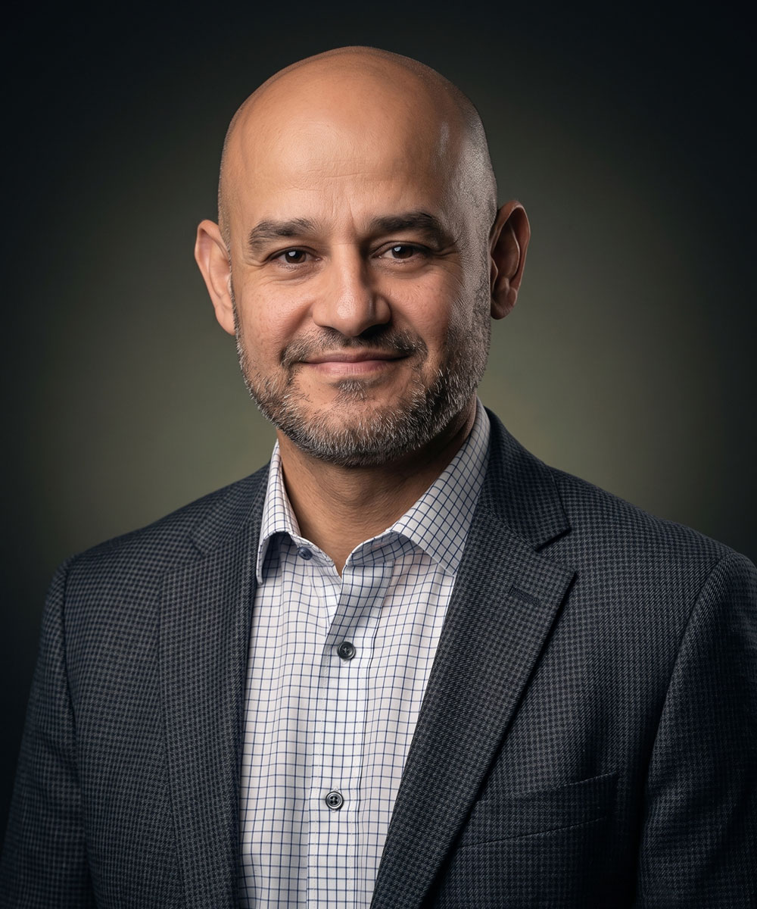
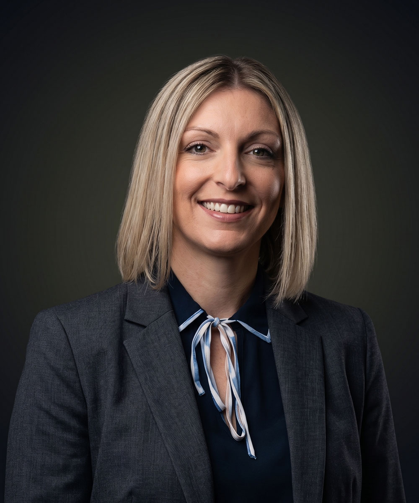

Ποιοι Είμαστε
Μία ομάδα νομικών, μία κοινή προσπάθεια
Λάζαρος Θ. Κουμπουλίδης – Φωτεινή Μιχ. Κύρτσιου & Συνεργάτες. Δικηγορικά γραφεία στη Βέροια, από το 1998.
Η Φιλοσοφία Μας
«Μια ομάδα νομικών και συνεργατών που μας ενώνει η κοινή προσπάθεια για ποιοτική παροχή ολοκληρωμένων νομικών υπηρεσιών στα πλαίσια της συμβουλευτικής ή της "μαχόμενης" δικηγορίας.»
Χρησιμοποιούμε την τεχνολογία για να εξαλείψουμε τη φυσική απόσταση και να παρέχουμε εξειδικευμένες νομικές υπηρεσίες. Τιμάμε την επιλογή του κάθε εντολέα μας ξεχωριστά και προσαρμόζουμε τις υπηρεσίες μας σύμφωνα με τα δικά του πρότυπα και ανάγκες, χτίζοντας μια σχέση συνεργασίας με αμφίδρομη εμπιστοσύνη και σεβασμό.
Απώτερος στόχος μας είναι να συμβάλλουμε μέσω της δουλειάς μας και ενός διαρκούς «διαλόγου» με την κοινωνία, στην επικράτηση των θεμελιωδών αξιών της Ισονομίας και Δικαιοσύνης, ως των βασικών δομικών συστατικών μιας Ελεύθερης Κοινωνίας Πολιτών.
(προς προσθήκη)
Οι Ιδρυτές
Λάζαρος Κουμπουλίδης & Φωτεινή Κύρτσιου

Λάζαρος Κουμπουλίδης
Δικηγόρος παρ' Εφέταις · Ιδρυτής
Γεννήθηκε στη Βέροια το 1972. Το 1996 αποφοίτησε από το Τμήμα Νομικής του Αριστοτέλειου Πανεπιστημίου Θεσσαλονίκης. Γνωρίζει την αγγλική γλώσσα. Είναι μέλος του Δικηγορικού Συλλόγου Βέροιας και ασχολείται με τη μάχιμη δικηγορία με ατομικό γραφείο από το 1998· το 2003 προήχθη σε δικηγόρο παρ' εφέτες.
Ασχολείται με όλο το φάσμα της δικηγορικής ύλης, με έμφαση στη συμβουλευτική εμπορικών επιχειρήσεων, το Εργατικό Δίκαιο, το Τραπεζικό Δίκαιο, υποθέσεις ποινικού δικαίου, υποθέσεις αλλοδαπών, αυτοκινητικές διαφορές, Δίκαιο Συλλόγων, νομοθεσία λαϊκών αγορών, Λατομικό Δίκαιο, προσφυγές δημοσίων υπαλλήλων και άλλα εξειδικευμένα θέματα.
Έχει αναπτύξει έντονη κοινωνική δράση με συμμετοχή σε πολιτιστικούς συλλόγους (Εύξεινος Λέσχη Βέροιας), αθλητικούς συλλόγους (Ποδηλατικός Περιβαλλοντικός Σύλλογος, Σύλλογος Αντισφαίρισης), και είναι ιδρυτικό μέλος και πρόεδρος του Συλλόγου Κοινωνικής Δράσης «Ανθρώπινο Δυναμικό Βέροιας».

Φωτεινή Κύρτσιου
Δικηγόρος · Συνιδρύτρια
Γεννήθηκε στη Βέροια το 1980. Το 2003 αποφοίτησε από το Τμήμα Νομικής του Αριστοτέλειου Πανεπιστημίου Θεσσαλονίκης. Το 2009 ολοκλήρωσε το Μεταπτυχιακό Πρόγραμμα «Διοίκηση Πολιτισμικών Μονάδων» του Ελληνικού Ανοικτού Πανεπιστημίου, και το 2010–2011 το πρόγραμμα παιδαγωγικής επάρκειας στην Α.Σ.ΠΑΙ.Τ.Ε. Γνωρίζει αγγλικά και γαλλικά.
Είναι μέλος του Δικηγορικού Συλλόγου Βέροιας και ασχολείται με τη μάχιμη δικηγορία από το 2006. Ασχολείται με όλο το φάσμα της δικηγορικής ύλης: υποθέσεις αστικής φύσεως, σύνταξη ιδιωτικών συμφωνητικών και συμβάσεων έργου, σύνταξη μισθωτηρίων, έρευνες ακίνητης περιουσίας ενώπιον Υποθηκοφυλακείων και Κτηματολογικών Γραφείων, διορθώσεις πρώτων εγγραφών, διαχείριση ακινήτων, εγγραφή και εξάλειψη προσημειώσεων.
Επίσης, οικογενειακό δίκαιο (διατροφή, διαζύγια, υιοθεσίες) και κληρονομικό δίκαιο (κήρυξη ιδιόγραφης διαθήκης, κληρονομητήριο), αποζημιώσεις, υποθέσεις υπερχρεωμένων νοικοκυριών και δανειοληπτών, εμπορικό δίκαιο και δίκαιο σημάτων, φορολογικό, διοικητικό δίκαιο και απαλλοτριώσεις.